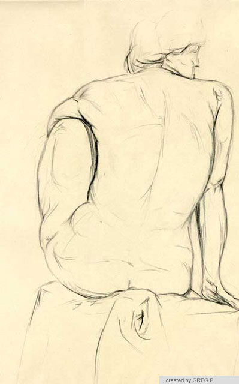

Visual Design
Although my recent work has been focused on application design and development, I had to arrive there from somewhere. I entered the design field as a visual designer and animator. Over time, I found that incorporating a developer's mindset and adding technical skills allowed me to more effectively communicate my designs to stakeholders and present solutions that were feasible and realistic.
I'm including some examples of figure drawing as a callback to the days before I became consumed by technology when I dreamed of working as an animator for Walt Disney. These drawings represent a foundational skill set that informs my design process.
